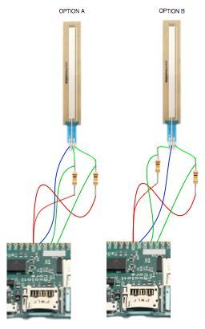

cool! i had to learn it as well 
Axoloti and sensors
xoanxil
#42
Hi,
Maybe this is a silly question but I apreaciate your help.
I am going to conect this accelerometor to axoloti (https://www.sparkfun.com/products/9269) .
It is analog and very similar, or even the same, to this other used here (http://www.axoloti.com/examples/general-input-and-output/).
Why is it conected VDD instead VDA in this schematic? The accelerometer says VCC ¿?
johannes
#43
Connect VCC of the accelerometer to VDDA of Axoloti, GND to GND, and X,Y,Z to any of the inputs select-able in the gpio/in/analog objects and all will be fine.
xoanxil
#45
Another newbie question... Can I use any ground pin regardless the voltage pin I use? I mean, can I use the GND closer to VDD for analog sensors? Does it make any difference?
xoanxil
#48
Hi again,
Finally I am connecting the ribbons and I am trying the double touch option. When I don´t touch anything one gpio is around 0 but the other is around 31.
If I play only with one finger one rise up from aroud 0 to the nay value I am tpuching but the other rise down from 31 less ratio than the first.
If I play with two fingers the first has the same behaivour and the other move fine two less points behind the first.
My question is how to avoid the second one to produce that 31 when it is not touched or rise down when only use one finger. I think it is not very musically useful but maybe you have some solution or trick that I cannot see.
Thanks in advance
xoanxil
#50
pin1 --> VDDA ( I invert this to get 0 when not touched)
pin2 --> resistor and gpio1, resistors other side goes to GROUND = 0 finger/around 0, 1 finger/any value, 2 fingers/any value
pin3 --> resistor and gpio2, resistors other side goes to GROUND = 0 finger/around 31, 1 finger/rise down, 2 fingers/any value
The problem is when pin 2 is not touched or using only one finger.
lokki
#51
if you go from left to right when you look at the soft pot and enumerate the pins 1, 2,3. it is pin 2 that should be grounded, pin one should get a vdd through a resistor, pin 3 as well. pin 1 and pin 3 are also directly connected to the two gpios (not through the resistors). both gpios will read high (max value) when not pressed, that is to expected with this method.
see attached pic for a schematic (from a few posts above):
does this clear thing up?
xoanxil
#52

So, now I have the ribbon conected following the option A showed in the picture but it should be like the option B. Right?
xoanxil
#55
It works! Thanks for your help. I am going to post the hardware Synthphony results in the enclosure section 
Arthur
#56
hi everyone,
i have a newbie question:
i wanna create a basic sequencer that plays a kick who's tempo is controlled by that heartbeat sensor earlier mentioned. i didn't find any more threads on that topic. so would it work to send the sensors signal to the lfo/square object, or do i need to filter the incoming signal or send it somewhere else?
i don't know much about programming synthesizers yet, so sorry if that's a stupid question.
thank's in advance!
arthur
bds
#57
@lokki I notice you have a long cable next to your instrument. Just wondering if you have noticed any problems using a long cable? Also wondering what kind of interconnects are you using?
lokki
#58
@bds, no problems using long cables (approx 4metres)
a couple of things to note though:
-the arduino micro, handling all the sensors on the instrument sits in the instrument itself, so no long cables from soft pots or fsrs (except for one, see below)
-i use a xlr connection with 7 pins with the following signals:
-usb in
-usb out
-serial midi in
-serial midi out
-9v
-gnd
-foot fsr (like a sustain pedal but with modulation capabilities)
the box on the floor then has the following in and outputs:
-9v input
-usb (for usb midi, but also to program the arduino when needed)
-midi in (the bass accepts program changes, since it has presets and sends program changes further to the midi output)
-4 midi outputs
-a mini jack to hook up a little box with 6 additional midi outs when needed
-a 6.3mm jack input to connect a footpedal (fsr)
i had no problems with this setup at all, except when i used a 3metre usb cable and tried to program the arduino. (expected, since the max length of usb is 5m i think)
joaogatao
#59
I'd like to have a go with an ultrasonic distance sensor (mine is a HY SRF05)
As mentioned above this would require a script, which I'd be happy to look into. The way I understand it from Arduino programs is that a 'high' signal is sent out to the trigger pin, followed by a short wait. Then the sensor sends back a 'high' signal from the echo pin to the controller, the duration of which is an indication of the distance being measured.
So essentially all signals are boolean and the script would be needed just to convert the echo duration into a krate signal?
I connected the sensor, set an LFO with pwm to the trigger pin (push pull) and read out the echo pin (pulldown) with a kscope display. But whichever combination of frequency and pwm, the output always remains uniquely 'low' = 0. My sensor also has an OUT pin, which according to a manual is there for reading with an oscilloscope. The OUT pin only gives a 'high' signal, but no response to the incoming trigger so far.
Any idea in which direction I can look further?
Thanks!
tele_player
#60
For that sensor, I would use an interrupt triggered by both rising and falling edge.